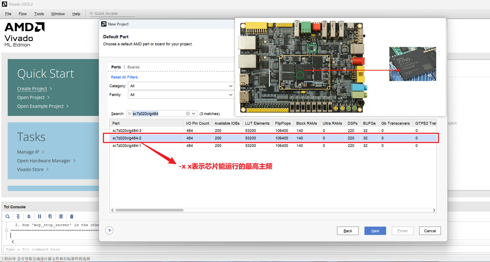
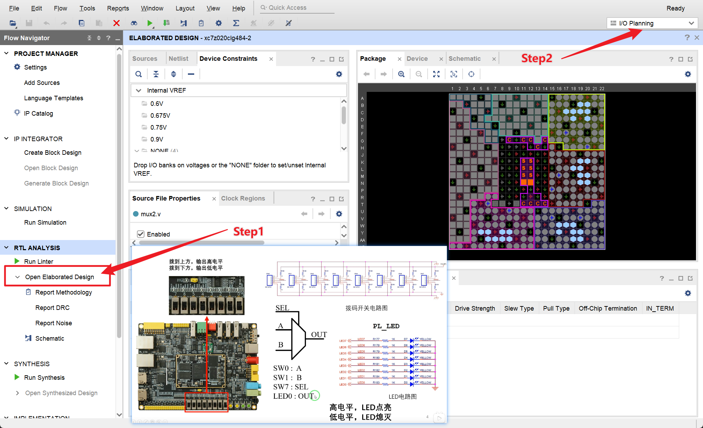
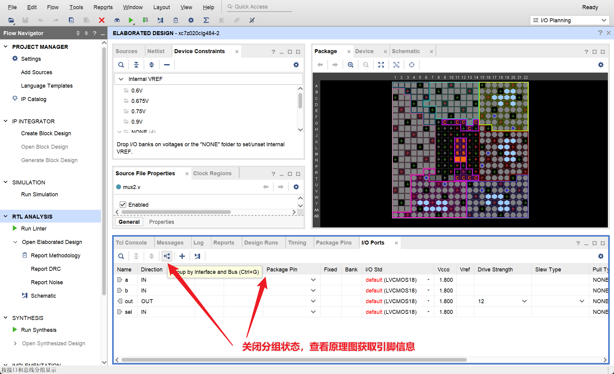
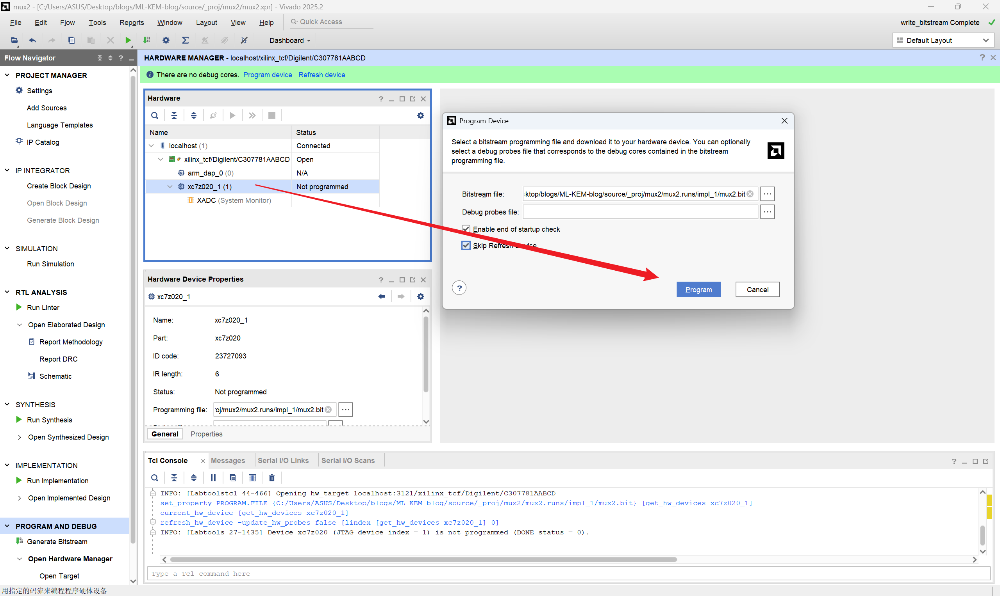

(a) Vivado新建项目，搜索并选中 xc7z020clg484-2（后缀-x 代表最高主频等级）

(b) Open Elaborated Design 展开 mux2.v：原理图、开发板映射与LED/SW连接关系

(a) I/O Planning：配置 a/b/out/sel 端口的封装引脚、LVCMOS18 电平与 Vcco/Vref 约束

(b) Hardware Manager：将 mux2.bit 通过 JTAG 烧录到 xc7z020_1 设备